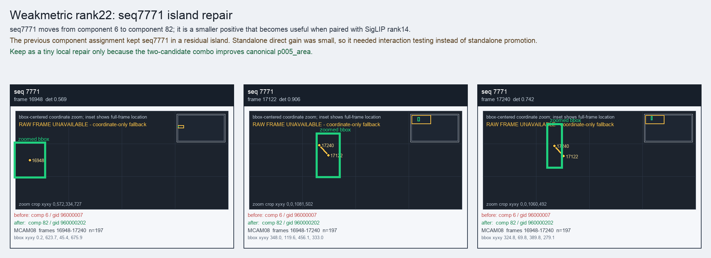

Weakmetric rank22: seq7771 island repair
seq7771 moves from component 6 to component 82; it is a smaller positive that becomes useful when paired with SigLIP rank14.
Before
component 6, gid 96000007, component_size 216
component 6, gid 96000007, component_size 216
After
component 82, gid 960000202, component_size 20, decision_status post_combo5_reviewer_combo_probe
component 82, gid 960000202, component_size 20, decision_status post_combo5_reviewer_combo_probe
Evidence
target_sim=0.5275, target_margin=0.2076, source_rest_margin=0.8595
Raw frame
unavailable_coordinate_fallback
target_sim=0.5275, target_margin=0.2076, source_rest_margin=0.8595
Raw frame
unavailable_coordinate_fallback
Failure and fix
Old failure: The previous component assignment kept seq7771 in a residual island. Standalone direct gain was small, so it needed interaction testing instead of standalone promotion.
New implementation: Keep as a tiny local repair only because the two-candidate combo improves canonical p005_area.
BBox evidence

Moved tracklets
| seq | video | gid | component | frames | dets |
|---|---|---|---|---|---|
| 7771 | vlincs_MS01_MC0001_MCAM08_2024-03-Tc6 | 96000007 -> 960000202 | 6 -> 82 | 16948-17240 | 197 |